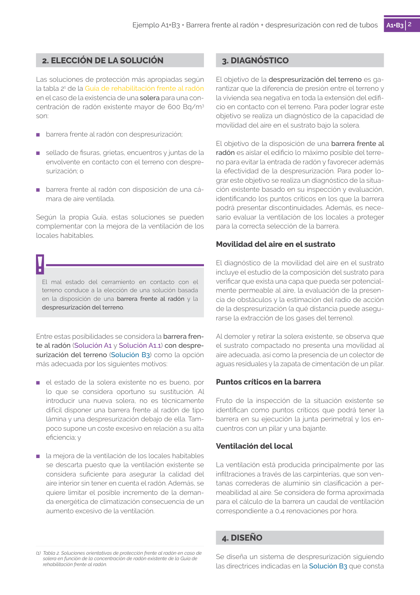
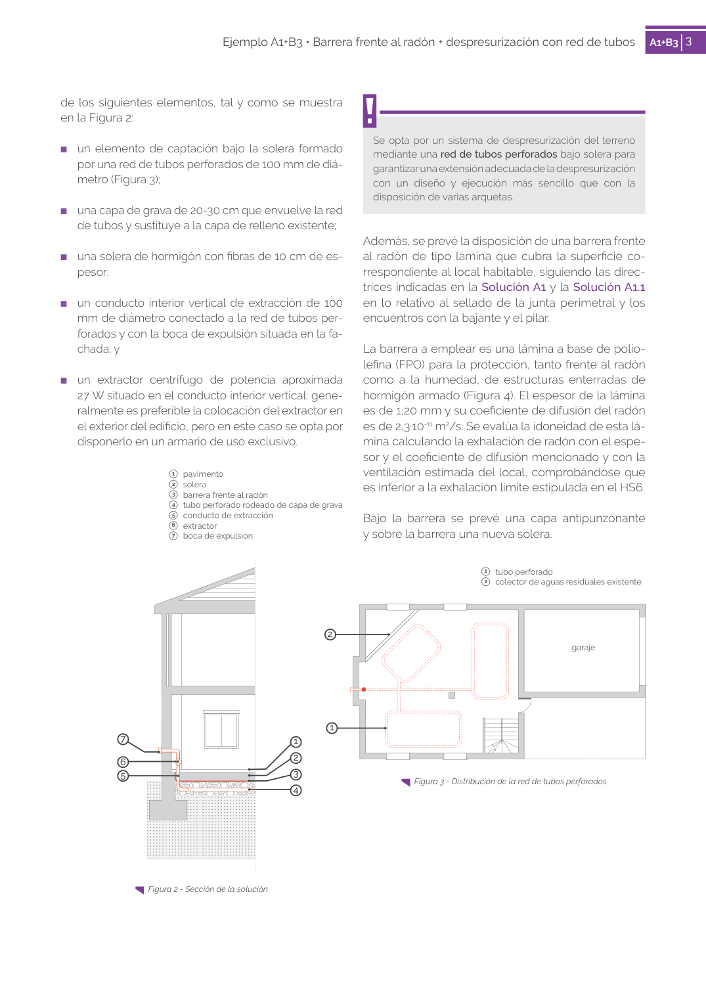

<!doctype html>
<html lang="es"><head><meta charset="utf-8">
<meta name="viewport" content="width=device-width, initial-scale=1">
<title>2. ELECCIÓN DE LA SOLUCIÓN</title><link rel="stylesheet" href="../estilo.css">
</head><body>
<nav><a href="../index.html">Índice</a> › <a href="../doc/guia-pdf-f3314b0414fe-sin-fecha-e58e54b822cf.html">GUIA</a></nav>

<h1>2. ELECCIÓN DE LA SOLUCIÓN</h1>
<header class="meta"><p><strong>Guia de rehabilitacion frente al radon Fichas</strong> · edición sin-fecha · capa guia</p>
<p>Documento <code>GUIA-PDF-f3314b0414fe</code> · SHA-256 del PDF <code>e58e54b822cf4ab00e258f0eb50c0f06a8c04e3730a7f530d224485e2a5bb02e</code></p>
<p><a href="../../contenido/docs/GUIA-PDF-f3314b0414fe/sin-fecha__e58e54b822cf/fuente.pdf">Copia fiel del PDF fuente</a> · <a href="https://www.codigotecnico.org/pdf/GuiasyOtros/GuiaRadon/Guia_de_rehabilitacion_frente_al_radon+Fichas.pdf">Fuente oficial</a></p>
<p><a href="https://www.codigotecnico.org/Guias/GuiaRadon.html">Ficha de la disposición en la fuente oficial</a></p>
<div class="cita"><p><a href="../../contenido/docs/GUIA-PDF-f3314b0414fe/sin-fecha__e58e54b822cf/fuente.pdf#page=2">Créditos y autoría en el PDF fuente</a>. Reproducción con cita de fuente y autores.</p>
<p>Permiso literal: Se permite la reproducción total o parcial del contenido de este nible en el momento de su publicación. No se aceptará por las institu­ documento siempre y cuando se cite la fuente original</p>
<details><summary>Leer los créditos completos y la autoría</summary><pre class="literal">Este documento ha sido elaborado por el Instituto de ciencias
de la construcción Eduardo Torroja (IETcc) bajo la supervisión
de la Dirección General de Agenda Urbana y Arquitectura del
Ministerio de Transportes, Movilidad y Agenda Urbana (MITMA).

El IETcc, perteneciente al Consejo Superior de Investigaciones
Científicas (CSIC), es el centro de investigación en edificación
de referencia en España. La Unidad de Calidad en la Construc­
ción del IETcc asesora al MITMA en la elaboración del Código
Técnico de la Edificación que, desde el año 2019, cuenta con la
sección HS6 Protección frente a la exposición al radón.

Dirección y Coordinación:
Ministerio de Transportes, Movilidad y Agenda Urbana
 Isabel Marcos Anasagasti
 Raquel Lara Campos
 Eduardo González de Prado
Instituto de ciencias de la construcción Eduardo Torroja CSIC
 Pilar Linares Alemparte

Autoras:
 Pilar Linares Alemparte
 Sonia García Ortega

Colaboradoras:
 Virginia Sánchez Ramos
 Karina Angélica García Pardo

Edita:
 Centro de Publicaciones Secretaría General Técnica
 Ministerio de Transportes, Movilidad y Agenda Urbana©

Entidad colaboradora:
 Consejo Superior de Investigaciones Científicas · CSIC
 Ministerio de Ciencia e Innovación

    Catálogo de publicaciones de la Administración General
    del Estado: publicacionesoficiales.boe.es

    Centro virtual de publicaciones del Ministerio de Transpor­
     tes, Movilidad y Agenda Urbana: www.mitma.gob.es

    Página web del Código Técnico de la Edificación:

                                                                                                                                                                              SECRETARÍA                                                                                                                                                                     GENERAL                                                                                                                                                                         DE    www.codigotecnico.org                                                                                                                                              AGENDA URBANA                                                                                                                                                                           Y VIVIENDA                                                                                                                                                 MINISTERIO                                                                                                           GOBIERNO                                                                                                                           DE                                                                                                                                           TRANSPORTES,                                                                                                                                                 MOVILIDAD                                                                                                             DE ESPAÑA                                                                                                                               Y AGENDA                                                                                                                           URBANA                                                                                                                                                               DIRECCIÓN                                                                                                                                                                     GENERAL                                                                                                                                                                         DE
Maquetación y diseño gráfico:                                                                                                     AGENDA URBANAY ARQUITECTURA
 Lapizmente. Estrategia • Diseño Gráfico


                                                                                                                                             CIENCIAFotografía portada:                                                                                GOBIERNODE ESPAÑA      MINISTERIODEE INNOVACIÓN
 Sonia García Ortega

Los contenidos o ideas recogidas en este documento pertenecen a
sus autores. Este documento está basado en el conocimiento dispo­     Se permite la reproducción total o parcial del contenido de este
nible en el momento de su publicación. No se aceptará por las institu­     documento siempre y cuando se cite la fuente original y a sus
ciones ni los autores implicados responsabilidad de ningún tipo por el                                                                    autores.
uso de estas recomendaciones. Las figuras tienen carácter ilustrativo
y no deben interpretarse como detalles constructivos.</pre></details></div>
<div class="aviso"><strong>Alcance y límites</strong><ul><li>Extracción automática sin revisión técnica humana completa. Contraste tablas, fórmulas, notas y excepciones con el PDF. La edición disponible no determina la vigencia ni la aplicabilidad a un proyecto.</li><li>Guia o documento divulgativo; no es texto normativo.</li><li>Extracción automática; el cotejo humano está pendiente.</li><li>Semántica y tablas no equivalen a validación exhaustiva.</li></ul></div></header>
<div class="cita">ID técnico a0239 · páginas físicas <a href="../pagina/guia-pdf-f3314b0414fe-sin-fecha-e58e54b822cf__p0065.html">65</a>, <a href="../pagina/guia-pdf-f3314b0414fe-sin-fecha-e58e54b822cf__p0066.html">66</a></div>
<nav><a href="guia-pdf-f3314b0414fe-sin-fecha-e58e54b822cf__a0238.html">← a0238</a> · <a href="guia-pdf-f3314b0414fe-sin-fecha-e58e54b822cf__a0240.html">a0240 →</a></nav>
<p>Formatos: <a href="../../contenido/docs/GUIA-PDF-f3314b0414fe/sin-fecha__e58e54b822cf/apartado/a0239__2-eleccion-de-la-solucion.json">JSON del segmento</a> · <a href="../../contenido/docs/GUIA-PDF-f3314b0414fe/sin-fecha__e58e54b822cf/apartado/a0239__2-eleccion-de-la-solucion.md">Markdown</a></p>
<pre class="literal">2. ELECCIÓN DE LA SOLUCIÓN
Las soluciones de protección más apropiadas según
la tabla 21 de la Guía de rehabilitación frente al radón
en el caso de la existencia de una solera para una con­
centración de radón existente mayor de 600 Bq/m3
son:
■
barrera frente al radón con despresurización;
■
sellado de fisuras, grietas, encuentros y juntas de la
envolvente en contacto con el terreno con despre­
surización; o
■
barrera frente al radón con disposición de una cá­
mara de aire ventilada.
Según la propia Guía, estas soluciones se pueden
complementar con la mejora de la ventilación de los
locales habitables.
El mal estado del cerramiento en contacto con el
terreno conduce a la elección de una solución basada
en la disposición de una barrera frente al radón y la
despresurización del terreno.
Entre estas posibilidades se considera la barrera fren­
te al radón (Solución A1 y Solución A1.1) con despre­
surización del terreno (Solución B3) como la opción
más adecuada por los siguientes motivos:
■
el estado de la solera existente no es bueno, por
lo que se considera oportuno su sustitución. Al
introducir una nueva solera, no es técnicamente
difícil disponer una barrera frente al radón de tipo
lámina y una despresurización debajo de ella. Tam­
poco supone un coste excesivo en relación a su alta
eficiencia; y
■
la mejora de la ventilación de los locales habitables
se descarta puesto que la ventilación existente se
considera suficiente para asegurar la calidad del
aire interior sin tener en cuenta el radón. Además, se
quiere limitar el posible incremento de la deman­
da energética de climatización consecuencia de un
aumento excesivo de la ventilación.
(1)  Tabla 2. Soluciones orientativas de protección frente al radón en caso de
solera en función de la concentración de radón existente de la Guía de
rehabilitación frente al radón.

3
Ejemplo A1+B3 • Barrera frente al radón + despresurización con red de tubos
A1+B33
de los siguientes elementos, tal y como se muestra
en la Figura 2:
■
un elemento de captación bajo la solera formado
por una red de tubos perforados de 100 mm de diá­
metro (Figura 3);
■
una capa de grava de 20-30 cm que envuelve la red
de tubos y sustituye a la capa de relleno existente;
■
una solera de hormigón con fibras de 10 cm de es­
pesor;
■
un conducto interior vertical de extracción de 100
mm de diámetro conectado a la red de tubos per­
forados y con la boca de expulsión situada en la fa­
chada; y
■
un extractor centrífugo de potencia aproximada
27 W situado en el conducto interior vertical; gene­
ralmente es preferible la colocación del extractor en
el exterior del edificio, pero en este caso se opta por
disponerlo en un armario de uso exclusivo.
Se opta por un sistema de despresurización del terreno
mediante una red de tubos perforados bajo solera para
garantizar una extensión adecuada de la despresurización
con un diseño y ejecución más sencillo que con la
disposición de varias arquetas.
Además, se prevé la disposición de una barrera frente
al radón de tipo lámina que cubra la superficie co­
rrespondiente al local habitable, siguiendo las direc­
trices indicadas en la Solución A1 y la Solución A1.1
en lo relativo al sellado de la junta perimetral y los
encuentros con la bajante y el pilar.
La barrera a emplear es una lámina a base de polio­
lefina (FPO) para la protección, tanto frente al radón
como a la humedad, de estructuras enterradas de
hormigón armado (Figura 4). El espesor de la lámina
es de 1,20 mm y su coeficiente de difusión del radón
es de 2,3·10-11 m2/s. Se evalúa la idoneidad de esta lá­
mina calculando la exhalación de radón con el espe­
sor y el coeficiente de difusión mencionado y con la
ventilación estimada del local, comprobándose que
es inferior a la exhalación límite estipulada en el HS6.
Bajo la barrera se prevé una capa antipunzonante
y sobre la barrera una nueva solera.
Figura 3 - Distribución de la red de tubos perforados</pre>
<figure><a href="../../contenido/docs/GUIA-PDF-f3314b0414fe/sin-fecha__e58e54b822cf/figura/p0065.png"></a><figcaption>Página visual 65, para contrastar fórmulas, tablas y figuras.</figcaption></figure>
<figure><a href="../../contenido/docs/GUIA-PDF-f3314b0414fe/sin-fecha__e58e54b822cf/figura/p0066.png"></a><figcaption>Página visual 66, para contrastar fórmulas, tablas y figuras.</figcaption></figure>
<footer>Generado estáticamente desde el corpus normalizado; sin JavaScript ni servicios externos. El HTML es una vista reproducible; conserve la fuente y la edición al citar.</footer>
</body></html>
